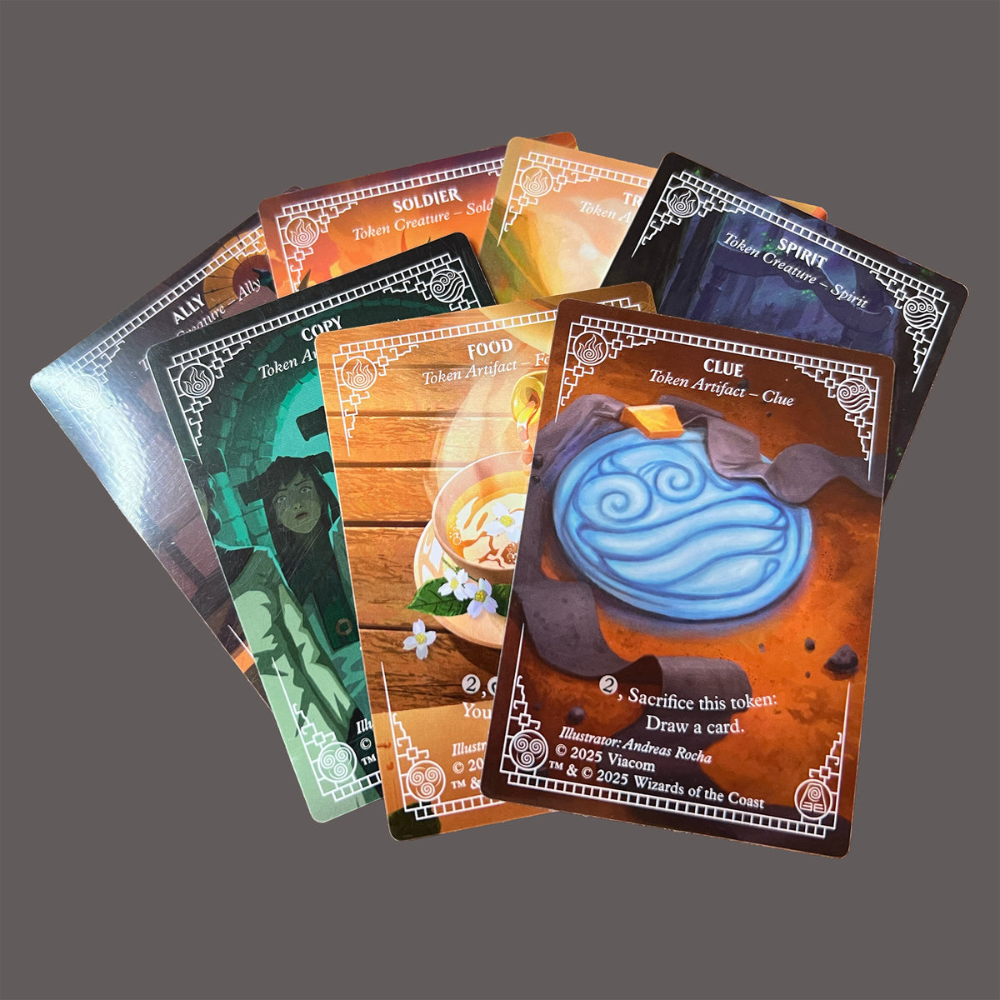

Aluminium Acquired
It's been a while since my last progress update. Mostly I have been busy letting my finances recover and watching prerelease cards gradually roll in. I'm only missing 4 out of 80 now, all of which have been ordered and should hopefully be on the way.
With the PTLA set effectively closed, my mind has started drifting towards other subsets. I've made my first foray into art cards with two small, targeted purchases. I suspect this will be the hardest subset to complete, mainly because of the Gold Signature versions. The subset that's been bugging me the most, however, is actually the tokens.
As I mentioned previously, the only token I was still missing was a second foil copy of TTLA #22 // TTLE #1 (Treasure // Aang, Awoken Avatar). To save on shipping, I nabbed one while ordering my first ever Gold Sig art card. They both landed today.

With the final Treasure token slotted, I now have a copy of every TTLA and TTLE card, in all treatments. Or do I?
A few days ago, I found out about Beadle & Grimm's Avatar: The Last Airbender Deluxe Bundle, an officially licenced MTG accessory kit produced in collaboration with Ultimate Guard. Only a thousand of these bundles were produced, all of which seem to have sold out last year. My interest was piqued when I noticed the contents of the token set included in this bundle:
- An Aang, Swift Savior metal life counter (1-40, 2.5" diameter)
- 5 +1/+1 counters (+5/+5 on the other side) designed as White Lotus Pai Sho tiles
- 5 spindown dice with bending symbols (d20, 2xd10, 2×d6)
- 7 aluminum token cards (Ally, Clue, Copy, Food, Soldier, Spirit, Treasure)
- All in an embossed tin featuring Avatar Aang.
Did I read that right? Official third party tokens produced for the Avatar UB set? They had to be mine.
Not to be outdone, I found a standalone listing for the token set from a local eBay seller and bought it immediately. As you can probably tell from the above image, the tin arrived today.

I won't try to make the argument that these are proper to the MTG set. These are metallic gameplay pieces, not WotC-produced playing cards. Nevertheless, I can't help but find a section for them in my binder: sleeved in Dragon Shields and carefully tucked away on the back page to avoid any damage to cardboard. The weight is obviously different, but they're not much thicker than cardstock—a perfect fit.
I'm not super pleased with the print quality on these tokens, honestly. The art has a couple print lines and imperfections, and the reverse is just plain aluminium. I had read online that Beadle & Grimm's were notorious for quality control issues, so it wasn't much of a surprise. The other items included in the tin look fantastic. A shame I'm not planning another play session where they might see some use!
In any case, I can now well and truly close the book on tokens.
The eagle-eyed among you may have also noticed that one of the cards pictured above is auf Deutsch. No, I'm not suddenly starting to collect every card in every language—this is for a small side project I've been working on. I have a separate post planned for when the rest have landed.